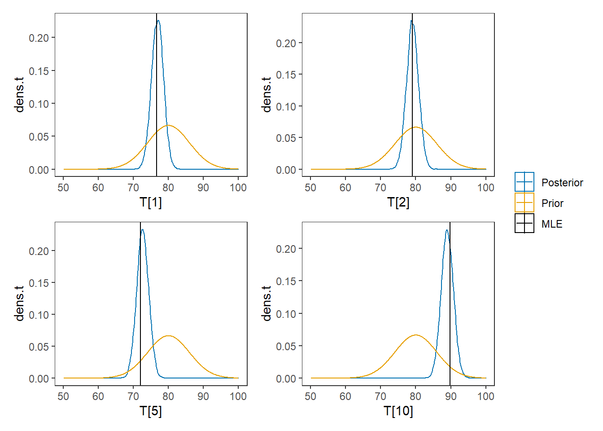

8.5 Example 2 - Stan
model_ctt2 <- '
data {
int N;
int J;
matrix[N, J] X;
real muT;
real sigmaT;
real sigmaE;
}
parameters {
real T[N];
}
model {
for(i in 1:N){
T[i] ~ normal(muT, sigmaT);
for(j in 1:J){
X[i, j] ~ normal(T[i], sigmaE);
}
}
}
'
# data must be in a list
mydata <- list(
N = 10, J = 5,
X = matrix(
c(80, 77, 80, 73, 73,
83, 79, 78, 78, 77,
85, 77, 88, 81, 80,
76, 76, 76, 78, 67,
70, 69, 73, 71, 77,
87, 89, 92, 91, 87,
76, 75, 79, 80, 75,
86, 75, 80, 80, 82,
84, 79, 79, 77, 82,
96, 85, 91, 87, 90),
ncol=5, nrow=10, byrow=T),
muT = 80,
sigmaT = 6, #sqrt(36)
sigmaE = 4 # sqrt(16)
)
# initial values
start_values <- function(){
list(T=c(80,80,80,80,80,80,80,80,80,80))
}
# Next, need to fit the model
# I have explicitly outlined some common parameters
fit <- stan(
model_code = model_ctt2, # model code to be compiled
data = mydata, # my data
init = start_values, # starting values
chains = 4, # number of Markov chains
warmup = 1000, # number of warm up iterations per chain
iter = 5000, # total number of iterations per chain
cores = 4, # number of cores (could use one per chain)
refresh = 0 # no progress shown
)## Warning in system(paste(CXX, ARGS), ignore.stdout = TRUE, ignore.stderr = TRUE): '-
## E' not found## Inference for Stan model: 5eefd59584a6c5be6da9aa620ec6167e.
## 4 chains, each with iter=5000; warmup=1000; thin=1;
## post-warmup draws per chain=4000, total post-warmup draws=16000.
##
## mean se_mean sd 2.5% 25% 50% 75% 97.5% n_eff Rhat
## T[1] 76.86 0.01 1.70 73.55 75.71 76.86 78.01 80.17 30336 1
## T[2] 79.08 0.01 1.70 75.70 77.94 79.09 80.23 82.42 32641 1
## T[3] 82.03 0.01 1.69 78.72 80.90 82.03 83.16 85.37 31404 1
## T[4] 75.04 0.01 1.70 71.73 73.88 75.04 76.20 78.37 31201 1
## T[5] 72.66 0.01 1.71 69.33 71.51 72.67 73.82 76.00 33449 1
## T[6] 88.45 0.01 1.71 85.10 87.30 88.46 89.60 91.81 32116 1
## T[7] 77.24 0.01 1.70 73.93 76.09 77.26 78.39 80.59 33790 1
## T[8] 80.54 0.01 1.72 77.18 79.39 80.53 81.71 83.88 34588 1
## T[9] 80.18 0.01 1.71 76.86 79.03 80.19 81.33 83.51 33476 1
## T[10] 89.00 0.01 1.73 85.59 87.82 89.00 90.16 92.42 32931 1
## lp__ -23.43 0.03 2.20 -28.60 -24.70 -23.11 -21.83 -20.09 7336 1
##
## Samples were drawn using NUTS(diag_e) at Thu Oct 08 22:33:29 2020.
## For each parameter, n_eff is a crude measure of effective sample size,
## and Rhat is the potential scale reduction factor on split chains (at
## convergence, Rhat=1).## ci_level: 0.8 (80% intervals)## outer_level: 0.95 (95% intervals)

# Gelman-Rubin-Brooks Convergence Criterion
p1 <- ggs_grb(ggs(fit, family = "T")) +
theme_bw() + theme(panel.grid = element_blank())
p1# autocorrelation
p1 <- ggs_autocorrelation(ggs(fit, family="T")) +
theme_bw() + theme(panel.grid = element_blank())
p1 # plot the posterior density
plot.data <- as.matrix(fit)
plot_title <- ggtitle("Posterior distributions",
"with medians and 80% intervals")
mcmc_areas(
plot.data,
pars = paste0("T[",1:10,"]"),
prob = 0.8) +
plot_title
# I prefer a posterior plot that includes prior and MLE
# Expanded Posterior Plot
MLE <- rowMeans(mydata$X)
prior_t <- function(x){dnorm(x, 80, 6)}
x.t<- seq(50.1, 100, 0.1)
prior.t <- data.frame(tr=x.t, dens.t = prior_t(x.t))
cols <- c("Posterior"="#0072B2", "Prior"="#E69F00", "MLE"= "black")#"#56B4E9", "#E69F00" "#CC79A7"
plot.data <- as.data.frame(plot.data)
p1 <- ggplot()+
geom_density(data=plot.data,
aes(x=`T[1]`, color="Posterior"))+
geom_line(data=prior.t,
aes(x=tr, y=dens.t, color="Prior"))+
geom_vline(aes(xintercept=MLE[1], color="MLE"))+
scale_color_manual(values=cols, name=NULL)+
theme_bw()+
theme(panel.grid = element_blank())
p2 <- ggplot()+
geom_density(data=plot.data,
aes(x=`T[2]`, color="Posterior"))+
geom_line(data=prior.t,
aes(x=tr, y=dens.t, color="Prior"))+
geom_vline(aes(xintercept=MLE[2], color="MLE"))+
scale_color_manual(values=cols, name=NULL)+
theme_bw()+
theme(panel.grid = element_blank())
p3 <- ggplot()+
geom_density(data=plot.data,
aes(x=`T[5]`, color="Posterior"))+
geom_line(data=prior.t,
aes(x=tr, y=dens.t, color="Prior"))+
geom_vline(aes(xintercept=MLE[5], color="MLE"))+
scale_color_manual(values=cols, name=NULL)+
theme_bw()+
theme(panel.grid = element_blank())
p4 <- ggplot()+
geom_density(data=plot.data,
aes(x=`T[10]`, color="Posterior"))+
geom_line(data=prior.t,
aes(x=tr, y=dens.t, color="Prior"))+
geom_vline(aes(xintercept=MLE[10], color="MLE"))+
scale_color_manual(values=cols, name=NULL)+
theme_bw()+
theme(panel.grid = element_blank())
p1 + p2 + p3 + p4 + plot_layout(guides="collect")